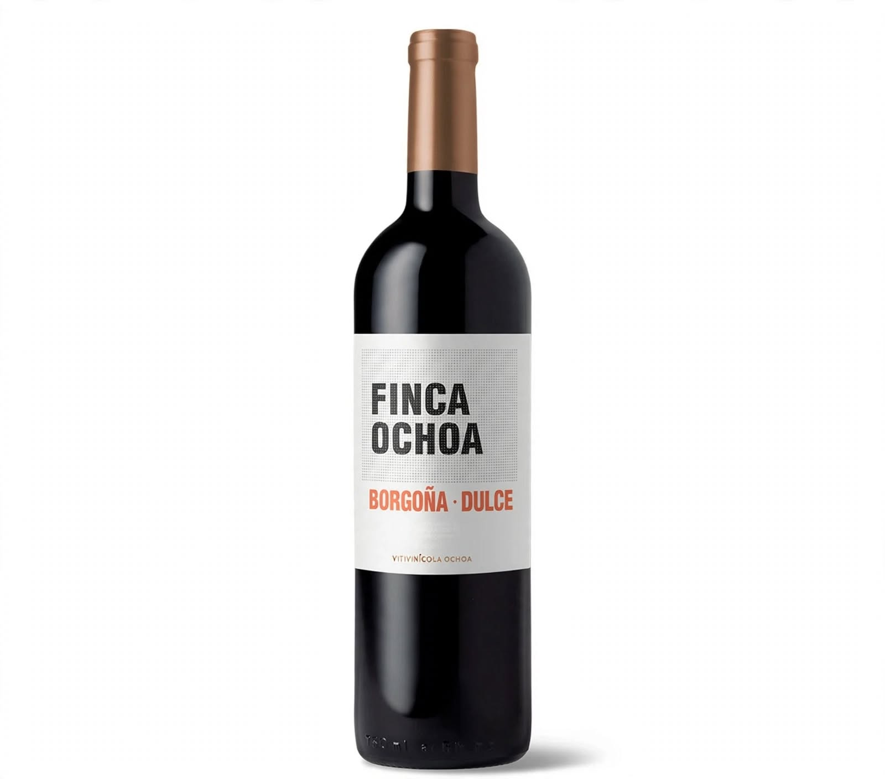
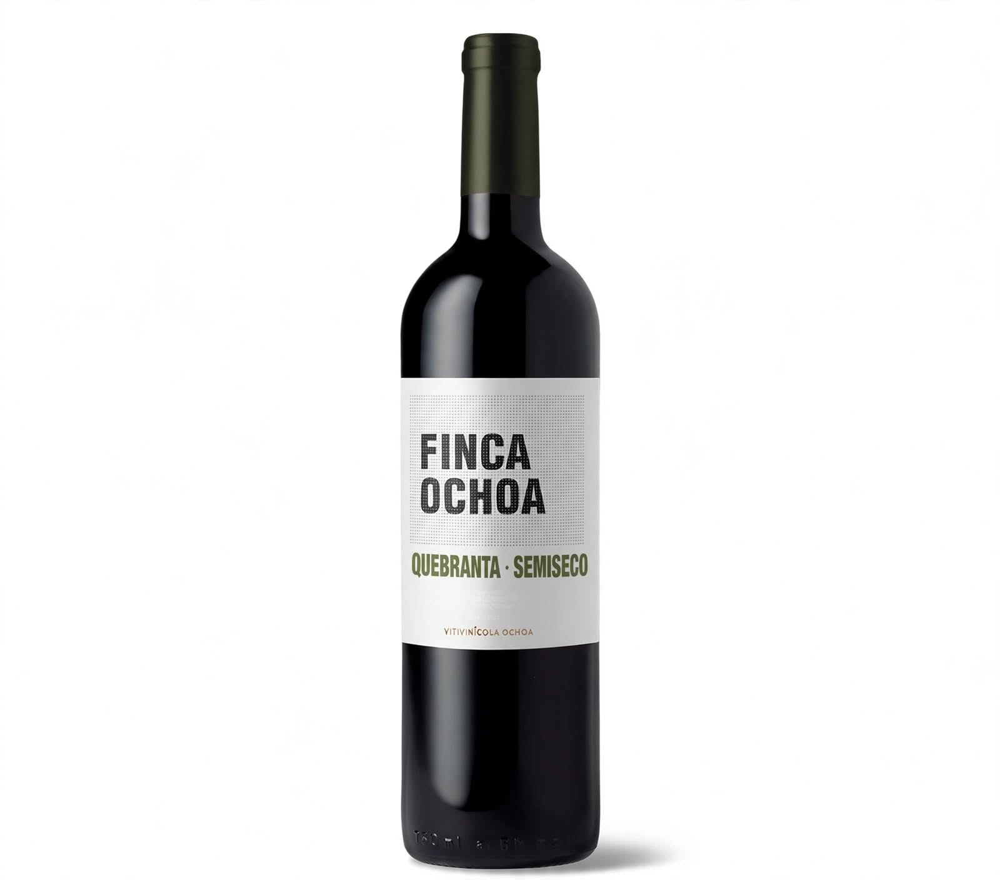

Catalogo
Seis vinos para descubrir
Conoce nuestras variedades. Usa el filtro para ver solo el tipo que te interesa.
Mostrando 6 de 6 variedades.





Comparacion rapida
Variedades, tipo y presentacion
En celulares, desliza la tabla hacia los lados para ver todas las columnas.
| Variedad | Tipo | Presentacion | Perfil |
|---|---|---|---|
| Borgona Dulce | Tinto dulce | 750 ml | Frutal, intenso |
| Rose Semidulce | Rosado semidulce | 750 ml | Fresco, frutal |
| Higo Dulce | Frutal dulce | 750 ml | Dulce, a higo |
| Quebranta Semiseco | Tinto semiseco | 750 ml | Uva Quebranta |
| Blanco Semiseco | Blanco semiseco | 750 ml | Ligero |
| Maracuya Dulce | Frutal dulce | 750 ml | Tropical |
Proyecto academico: la informacion es referencial y cultural, para conocer la propuesta de la finca.